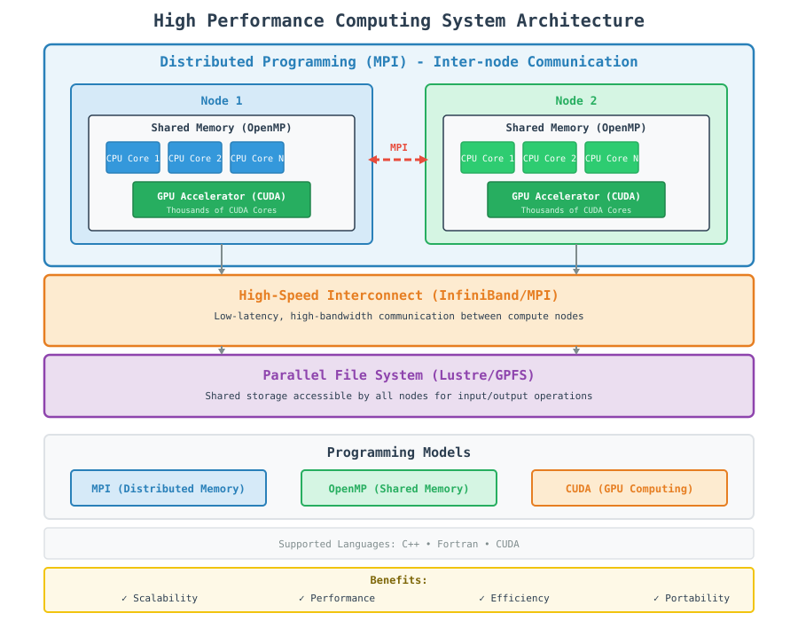

High Performance Computing
High Performance Computing (HPC) involves using powerful computing resources to solve complex scientific and engineering problems that are too large or computationally intensive for standard computers. HPC systems typically consist of thousands of computing nodes working together to achieve results faster than would be possible with a single computer.
The HPC Landscape
Modern HPC systems leverage three primary programming models, each addressing different aspects of computational performance:
1. Distributed Programming (MPI)
Distributed programming uses the Message Passing Interface (MPI) to enable communication between multiple independent processes running on different compute nodes. Each process has its own memory space and communicates with others via messages over a network.
Key characteristics:
Multiple nodes connected via high-speed interconnects
Independent memory spaces
Communication via message passing
Scales to thousands of nodes
Languages: C++, Fortran
Use Case: Large-scale simulations requiring massive parallelism across many compute nodes.
3. Heterogeneous Programming (GPU/CUDA)
Heterogeneous programming utilizes accelerators like GPUs alongside CPUs to perform massively parallel computations. CUDA (Compute Unified Device Architecture) enables developers to harness GPU computing power for data-parallel workloads.
Key characteristics:
CPU + GPU hybrid architecture
Massive parallelism (thousands of cores)
Data-parallel workloads
Memory management between host and device
Languages: C++, CUDA
Use Case: Highly parallel computations like matrix operations, machine learning, and scientific simulations.
Hybrid HPC Approach
Modern HPC applications often combine all three models:
MPI for inter-node communication
OpenMP for intra-node parallelism
CUDA for GPU acceleration
HPC System Architecture Overview
The diagram below illustrates the typical HPC system architecture:
